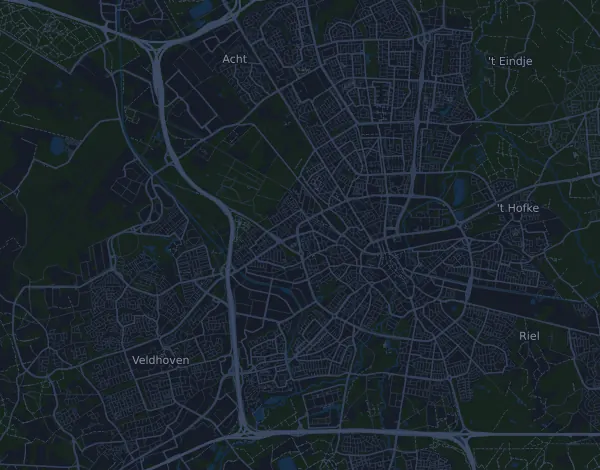

ASML Marathon Eindhoven 42,5 km
- Matka
- 42,5 km
- Nousumetrit
- ↑ 79 m
- Korkein kohta
- 27 m mpy
- Alusta
- Maantie
- Luonne
- Tasainen
Korkeusprofiili
Valmistaudu Milan kanssa
Mila on juoksuvalmentaja sovelluksessa. Kun lisäät kisan suunnitelmaasi, valmentaja suunnittelee viikot starttiin asti kuntosi mukaan ja antaa sinulle loppuaikaennusteen sekä suunnitelman vauhdista, juomisesta ja energiasta reitillä.

Oikea harjoitus. Oikea päivä.
Reitti

Tietoa reitistä
ASML Marathon Eindhoven on 42,5 km:n maantiejuoksu (Eindhoven, Alankomaat). Reitillä on nousua 79 m ja laskua 80 m, 1,9 m/km, joten reitti on tasainen. Korkein kohta on 27 m ja matalin 15 m merenpinnan yläpuolella.
Reitillä ei ole yhtenäisiä vähintään 25 nousumetrin nousuja.
Mila-sovelluksessa valmentaja kuvailee reitin tarkasti omalla kielelläsi ja suunnittelee vauhtisi ja energiasi sille.
Vauhtitaulukko
ASML Marathon Eindhoven 42,5 km ajassa 3:00:00 – vauhti kilometrillä ja väliajat
4:14 min/km · km 10: 42:19 · km 21,1: 1:29:18 · km 30: 2:06:58 · km 40: 2:49:18 · maali: 3:00:00
ASML Marathon Eindhoven 42,5 km ajassa 3:30:00 – vauhti kilometrillä ja väliajat
4:56 min/km · km 10: 49:23 · km 21,1: 1:44:11 · km 30: 2:28:08 · km 40: 3:17:30 · maali: 3:30:00
ASML Marathon Eindhoven 42,5 km ajassa 4:00:00 – vauhti kilometrillä ja väliajat
5:39 min/km · km 10: 56:26 · km 21,1: 1:59:04 · km 30: 2:49:18 · km 40: 3:45:43 · maali: 4:00:00
ASML Marathon Eindhoven 42,5 km ajassa 4:30:00 – vauhti kilometrillä ja väliajat
6:21 min/km · km 10: 1:03:29 · km 21,1: 2:13:57 · km 30: 3:10:27 · km 40: 4:13:56 · maali: 4:30:00
Ajat olettavat tasaisen vauhdin koko matkan. Tämä on pelkkää laskentaa, ei ennuste: mäissä, ruuhkassa ja juomapisteillä vauhti vaihtelee.
Usein kysyttyä
ASML Marathon Eindhoven 42,5 km: milloin kisa juostaan?
Seuraavan kisan päivä ei ole vielä selvillä. Viimeksi kisa juostiin 11. lokakuuta 2026.
ASML Marathon Eindhoven 42,5 km: kuinka pitkä matka on ja paljonko nousua on?
Matka on 42,5 km, nousua 79 m ja laskua 80 m. Korkein kohta on 27 m mpy.
ASML Marathon Eindhoven 42,5 km: millainen reitti on?
Reitti on tasainen, nousua keskimäärin 1,9 m kilometrillä. Reitillä ei ole yhtenäisiä vähintään 25 nousumetrin nousuja. Reitti kulkee lähdöstä maaliin, joka on eri paikassa. Alusta on maantietä.
ASML Marathon Eindhoven 42,5 km: miten jaan vauhtini?
Pyri tasaiseen rasitukseen koko matkan, ja jarruttele ensimmäisillä kilometreillä, kun jalat tuntuvat kevyiltä ja muut karkaavat edelle. Reitti on tasainen, joten tasainen vauhti kilometriä kohden toimii hyvin. Milasta saat juuri tälle reitille vauhtisuunnitelman oman kuntosi mukaan.
Lisää samanlaisia kisoja
Lisää kisoja lähellä
- Arrow Venloop – Halve Marathon 21 km21. maaliskuuta 2027 · Venlo, Alankomaat
- Egmond Halve Marathon 21 km10. tammikuuta 2027 · Egmond aan Zee, Alankomaat
- Zevenheuvelenloop (15 km)15. marraskuuta 2026 · Nijmegen, Alankomaat
- NN CPC Loop Den Haag – NN Halve Marathon (21,1 km)14. maaliskuuta 2027 · Den Haag, Alankomaat
- Amsterdam Marathon 42,2 km18. lokakuuta 2026 · Amsterdam, Alankomaat
Valmistaudu Milan kanssa
Oikea harjoitus. Oikea päivä.
Tiedot ovat reittitiedostosta ja järjestäjän tiedoista. Tarkista päivä, lähtöajat ja säännöt järjestäjältä.
Mila ei ole yhteydessä järjestäjään eikä kisan sponsoreihin, eivätkä ne sponsoroi tai suosittele Milaa. Nimet ja tavaramerkit kuuluvat omistajilleen. Järjestäjä tai oikeuksien haltija? Pyydä muutosta tai poistoa